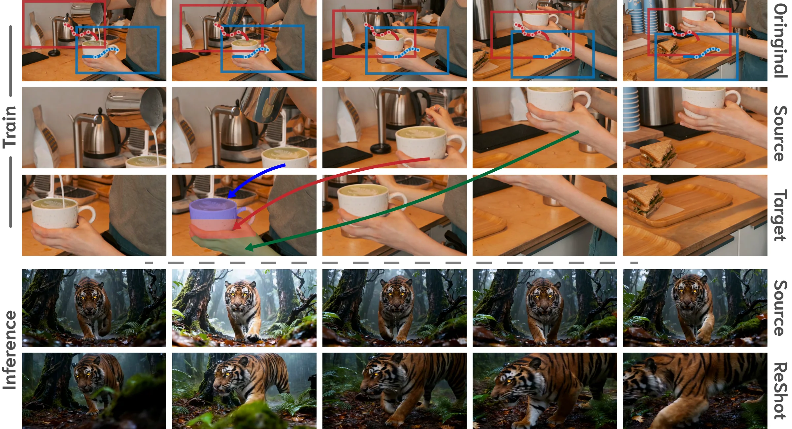
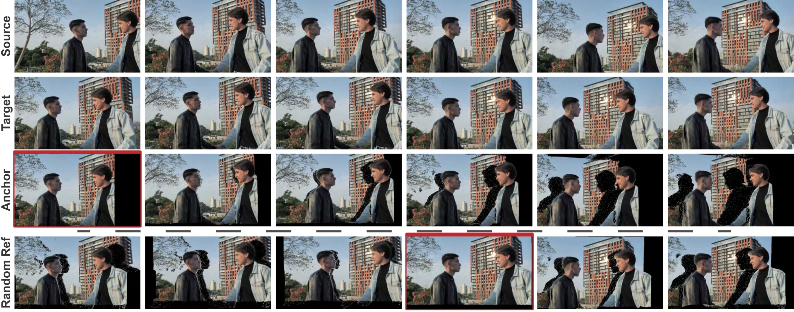
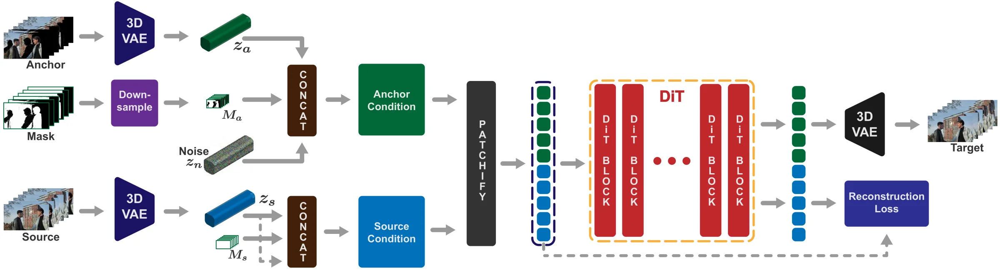

A Self-Supervised Model for In-the-Wild Video Reshooting
The pipeline at inference: a monocular input drives a 4D point-cloud anchor rendered along a new camera trajectory, and the model refines that anchor into a clean reshoot while preserving the original motion and fine detail.
Two independent crop trajectories from one monocular clip form a source and a target view. A forward-warped anchor exposes the disocclusions a new camera path would create, and a minimally adapted diffusion transformer routes textures across space and time to reconstruct the target.

Our training data pipeline. From a single monocular video we sample two independent smooth random-walk crop trajectories: one becomes the source view, the other becomes the target view of the same dynamic scene. Because the trajectories disagree spatially, the source frame at any given time cannot be copied directly to produce the target. The model must instead route textures from other source frames where the missing regions were visible, learning to reconstruct one view of a dynamic scene from a different one.

The same pipeline on real footage. Each row shows the source frames, the target frames, and the synthesized anchor for one training triplet. The black regions in the anchor are the disocclusions a new camera path would expose; the model is trained to fill them by routing textures from later source frames where the geometry was still visible. This is the supervisory signal that forces 4D structure to emerge from purely 2D data.
Because the source and target crops are spatially misaligned and share occlusions, the model must search across both space and time in the source video to fill in missing target details. 4D structure emerges as a consequence, with no 3D supervision.
The pipeline relies only on a robust 2D dense tracker (AllTracker). It is domain-agnostic and scales to any monocular video: photorealistic footage, animation, and generative art, without restrictive domain assumptions.

Our conditioning architecture. (1) VAE Encoding: the anchor video (Va) and source video (Vs) are independently encoded into latents (za, zs). (2) Conditioning Setup: the anchor latent pairs with a noise latent zn and downsampled mask Ma; the source latent duplicates itself in place of noise and uses an all-ones mask Ms, so any source content is usable. (3) DiT Processing: both conditioned streams are patchified, temporally concatenated, and routed through the pre-trained DiT via self-attention — letting the model do fine-grained content routing without architecture changes. (4) Source Token Management: an auxiliary reconstruction loss on the output source tokens preserves high-fidelity texture through refinement.
The same model rendering new camera trajectories on scenes it never trained on. Same motion, same fine detail, a path the camera never actually took.
Across VBench quality, temporal consistency, camera accuracy, and view synchronization, our method beats TrajectoryCrafter, ReCamMaster, and Ex4D on complex dynamic scenes.
| Method | VBench Quality | Temporal | Camera Accuracy | View Synchronization | ||||||||
|---|---|---|---|---|---|---|---|---|---|---|---|---|
| Aesth ↑ | Imag ↑ | Flick ↑ | Smooth ↑ | Subj ↑ | Bg ↑ | CLIP-F ↑ | RotErr ↓ | TransErr ↓ | Mat.Pix ↑ | FVD-V ↓ | CLIP-V ↑ | |
| TrajectoryCrafter (49 frames) | 52.69 | 59.67 | 96.97 | 99.03 | 93.78 | 95.13 | 98.80 | 2.26 | 3.03 | 1851.80 | 582.56 | 92.40 |
| Ours (49 frames) | 52.72 | 57.81 | 97.43 | 99.24 | 95.09 | 95.62 | 99.01 | 2.61 | 2.73 | 2737.65 | 488.22 | 94.96 |
| ReCamMaster | 48.71 | 52.61 | 97.57 | 99.26 | 88.57 | 90.65 | 98.49 | 11.29 | 19.59 | 1314.00 | 732.52 | 88.91 |
| Ex4D | 49.72 | 55.76 | 97.46 | 99.08 | 91.51 | 94.78 | 98.94 | 3.94 | 4.21 | 2188.98 | 685.63 | 89.77 |
| Ours | 52.85 | 58.64 | 97.37 | 99.21 | 93.43 | 95.24 | 99.03 | 2.76 | 4.23 | 2720.83 | 586.24 | 93.16 |
Underline ≡ best in group. ↑ higher is better, ↓ lower is better.
We ablate core architectural and training choices. Our baseline uses a black anchor background, token concatenation through self-attention, and monocular videos without augmentations.
Qualitative ablation on a complex scene with moving smoke and colored lighting. The Synthetic Data Only model fails to capture dynamic smoke, snapping to rigid plausible content instead. The Cross-Attention variant loses fine source detail (notice the saxophone texture) and struggles to align with the anchor when geometry deviates. Our full model faithfully tracks the anchor's new camera path while preserving high-fidelity textures and the complex dynamics of the original footage.
@InProceedings{paliwal2026reshoot,
author = {Paliwal, Avinash and Iyer, Adithya and Yadav, Shivin and Afridi, Muhammad and Harikumar, Midhun},
title = {Reshoot-Anything: A Self-Supervised Model for In-the-Wild Video Reshooting},
booktitle = {Proceedings of the IEEE/CVF Conference on Computer Vision and Pattern Recognition (CVPR) Workshops},
month = {June},
year = {2026},
pages = {11596-11606}
}We thank Jaynti Kanani and the rest of the Morphic team for compute resources and support, and Dharmesh Kakadia and Isaac Wang for reviewing the paper.